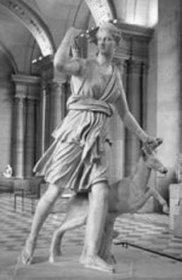

"Homeros'un İlyada destanında ondan pek fazla söz edilmese de, gerek eski çağların tragedya yazarlarına, gerekse yakın yüzyılların sanatçılarına sürekli esin kaynağı oldu, güzeller güzeli İfigeneya... Euripides, o ünlü "İfigeneya Aulis'te" ve "İfigeneya Tauris'te" adlı tragedyalarında işledi onun acı yazgısını. Yakın çağlardan, örneğin Göte ve Rasin de aynı konuyu işleyenler arasındaydı..."
Prenses İfigeneya (Iphygeneia), kız kardeşi Elektra ve erkek kardeşi Orestes; sürekli kan döken kral Atreus'un ilençli soyundan geliyorlardı... Krallar kralı ve Troya fatihi ünlü Agamemnon'un çocuklarıydılar. Anaları da kraliçe Klütaymestra'ydı.
Dillere destan olduğu gibi Troya kralı Priyamos'un yakışıklı oğlu Paris; Yunanistanlı güzel Helena'yı sözde Troya'ya kaçırınca, buna misilleme olarak Yunanistanlı Başkral Agamemnon, Troya'ya namus temizleme savaşı açtı. Çünkü söylediğine göre üç kez konuştuğu Baştanrı Zeus, Helena'nın namusunu temizlemekle görevlendirmişti onu!.. Bu gerekçeyle Başkral Agamemnon, bütün kent krallıklarından devşirttiği en seçkin askerlerle yüklü gemilerin, Aulis limanında toplanmasını buyurdu.
Ne var ki bu limanda buluşmaya başlayan gemilerin toparlanması ve buradan Troya'ya varış süreci yıllar aldı... Çünkü birkaç yıl yelkenleri şişirecek tanrı rüzgârları esmedi bir türlü! Haliyle Başkral Agamemnon aralıksız sürüp giden sütliman havadan büyük bir öfke ve sıkıntıya kapıldı. Savaş filolarının ve kendinin demirbaş bilicisi ve tanrıların elçisi Kalhas'a, esmeyen rüzgârlar konusunda akıl danıştı. Kalhas'a göre yelkenleri şişirecek rüzgârlar kendiliğinden esmeyecekti. Tanrıça Artemis bir kurban istiyordu! Çünkü Agamemnon, yıllar önce bir av partisi sırasında onun kutsal geyiğini öldürmüştü!.. Bu yüzden de tanrıça, esmesi gereken bütün rüzgârların önünü kesiyordu. Ne var ki onun istediği kurban da, kendi öz kızı İfigeneya'ydı! Bilicinin söylediklerinden ilkin şaşkına dönen Agamemnon, uzun uzun bağırıp çağırdı... Böyle bir zorunluluğu yerine getiremeyeceğini söyledi... Ne var ki Agamemnon; güzel Helena'nın namusunu temizleme örtüleri altındaki Troya'nın hazinelerini ve güzel kadınlarını devşirme niyetini gerçekleştirebilmek için, böyle bir özveriye katlanması gerektiğini de düşünmeye başladı. Çünkü öz kızı İfigeneya'yı kendi elleriyle kurban ederse, buyruğundaki bütün komutanlar ona inanacaklar, Troya'yı yakıp yıkmak için daha gönüllü savaşacaklardı! Böyle bir niyetin yönlendirmesiyle Agamemnon; tanrıça Artemis'in kızını kurban etme buyruğunu, onun sunağında, geleneklere uygun olarak yerine getirmeye razı olmuş göründü...

Tanrıça Artemis ve geyiği
Hemen tanrıçanın isteğini yerine getirmek için Agamemnon, Mükene krallığının sarayında bıraktığı karısı Klütaymestra (Klytaimestra) ile kızı İfigeneya'nın Aulis'e gelmeleri için haber saldı. Çünkü Troya'ya doğru yelken açmadan önce, İfigeneya ile ünlü komutan Ahilleus arasında söz kesip nişan yapacaktı!. Bu uydurma haberi alır almaz sevinçten Kraliçe Klütaymestra, orduların umutsuzca rüzgâr beklediği Aulis limanına uçarcasına, apartopar getirdi kızı İfigeneya'yı!. Ne var ki kraliçe işin içyüzünü öğrenir öğrenmez de haliyle beyninden vurulmuşa döndü... Çünkü kendiliğinden bir soru çengellendi hemen beyninde: "Bu savaşın sözde tek nedeni olan güzel Helena'nın namusu, acaba kocam Başkral Agamemnon'un gözünde öz kızının yaşamından daha mı önemliydi?" Klütaymestra, sözde tanrıların buyruğuyla girişilen bu namus temizleme savaşındaki ana nedenin, güzel kadınlar ve hazine yağması amacına yönelik olduğunu bütün çirkinliğiyle o anda anlayıverdi! Bu yüzden de tepeden tırnağa isyan kesildi. Küplere bindi öfkeden; yolundu yırtındı; ama kızının ağır yazgısını değiştiremedi!..
Böylece İfigeneya, tanrıça Artemis'in öfkesinin yatıştırılması amacıyla tapınaktaki sunağa, elleri kolları bağlanmış olarak getirildi. Yanında da, onu kendi elleriyle kurban edecek babası Başkral Agamemnon vardı! Masum kızın öylesine mahzun ve yazgısına öylesine umarsız bir boyun eğmişliği vardı ki, tam kurban edileceği sırada, tanrıça Artemis masum İfigeneya'yı kimselere göstermeden hemen havaya ağdırdı ve onun yerine bir geyik yerleştiriverdi!.. Sonra da Aulis'teki tapınağına rahibe yapmak üzere onu gizlice alıp götürdü...
Sunaktaki bu işlemden sonra, Aulis limanındaki bütün gemilerin yelkenlerini tıkabasa doldurup şişirecek tanrısal cömert rüzgârlar artık esmeye başladı... Böylece bir kez daha tanrıların yalan rüzgârlarıyla yelkenlerini şişiren Agamemnon; ordularını gemilere doldurup Troya'ya doğru, pupa yelken yol almaya başladı...
Aulis limanından sarayına tek başına dönen kraliçe üzgün Klütaymestra, kızı İfigeneya'nın acısından kaynaklanan kin ve öç alma duygularıyla dolu bir volkana dönüştü hemen. Bu yüzden ilk iş olarak Troya'da habire kan döktüren kocası Agamemnon'u aralıksız boynuzlamak için, onun amca oğlu Aygistos'u (Aigystos) çağırdı sarayına. Onunla günlerini gün etmeye başladı... Yıllar sonra Troya'dan dönecek kocasının gelişini kendisine haber verecek, elleri meşaleli askerlerin nöbet tutacağı gözetleme kuleleri de diktirdi belirli noktalara...
On yıl süren Troya savaşından sonra Agamemnon gemiler dolusu hazineler, köle olacak güzel kadınlar ve karısı Klütaymestra'ya kuma olacak Troya kralı Priyamos'un güzel ve soylu kızı bilici Kassandra'yla birlikte Mükene sarayına ulaştı. Ulaşır ulaşmaz da karısı Klütaymestra, altın, kadın ve ün amaçlı bu savaş sırasında kurban ettiği masum kızı İfigeneya'nın, kanına girdiği bütün Yunanistanlı ve Troyalı nice masum yiğitlerin öcünü almak üzere, yıllardır kiniyle bilediği hançerini, kocası Agamemnon'un sırtına, ardı ardına sapladı...